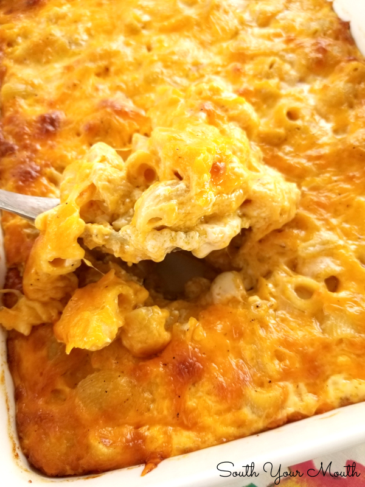

English food narative
History of Mac & Cheese
The first known record of mac and cheese appears in the medieval Italian cookbook known as Liber de Coquina, its title translates to “The Book Of Cooking”. This book, published in the early 14th century, pioneered some of the earliest written recipes of its time, covering food categories such as fish, poultry, and pastries, even going over recipes of fine wine. The book describes mac and cheese as a type of lasagna, using longer flatter noodles instead of the curved noodles we know today. This recipe became popular as more people learned to read with the rise of the printing press, and more people had access to the ingredients required as well. German cooks later created the curved noodles we are familiar with. This noodle design quickly spread throughout Europe and became the new standard for mac and cheese. At the time of the early American pioneers, crops such as wheat and grain were not uncommon in the new land, so noodles were created very often to feed the early villages of the time. Dairy livestock was also in abundance, so these two common food products were combined to make macaroni and cheese. Early in the civil war and at the beginning of the industrial revolution, America’s first factories were being created, and food products like cheese, milk and processed meats were becoming more prominent in American grocery stores. The first world war in America only increased the demand for processed food, thus creating Kraft Mac and Cheese, one of the biggest, most known food brands today. Kraft was the original creator of powdered cheese, first being created to feed soldiers during the war. As time went on more people began to enjoy this quick and easy meal. The convenience and inexpensive qualities of the product only helped its growth and profit spread across America.
What Mac & Cheese Means To Me
Macaroni and cheese is the dinner everyone wishes they had. The white casserole dish, the bottom filled with 2% milk, and a variety of cheeses, comes together in a huge cheesy extravaganza. Fresh butter sits on top of the many layers of yellow-orange purity. Homemade, savoury smell fresh from the oven. Sprinkled bread crumbs caked on top of the encrusted cheese. Slowly cracking open, as the shell of baked cheeses and butter is cooped the macaroni into the ceramic bowl. Savoury flavour spreads onto your taste buds. Chewing the crusted cheddar cheese. Feeling it on your tongue. Sipping homemade tart lemonade as you consume this glorious meal. With a side of steamed bratwurst, with homemade german mustard. Spicey savoury hot sausage. Pliant cheesy noodles, melting on the tongue with the slightest contact. Afterwards, homemade ice cream with grandma’s fresh chocolate fudge. Hot brown sauce slowly melts the icy creamy mixture.
Mac & Cheese Fiction
All starch noodles have some kind of unique shape. Farfalle is shaped like a tie, Konkiloni presented itself as a sea shell, and Cavatappi was twisted and turned left and right. But, macaroni could be seen as the runt of the group, as it only existed with one, small bend. He regularly felt ashamed of himself, thinking that he needs to be more to make up for his simple looks. He lay on his shelf at night feeling like a part of himself was missing. But one day it all changed. July 14th, 2008, he met someone who would change his life, who would make him feel comfortable in his own noodley body. He was sitting on his shelf one day when he saw someone across the room sitting by the base of the Samsung Smart Fridge 2022 edition. A small piece of shredded cheese was sitting all alone feeling like it needed someone too. He felt longing toward this piece of cheese as if it was the last piece to his puzzle. He needed to reach it, but it was so far away, yet so close. The only thing that was in between him and his destiny was the dirty, filthy ground of the pantry. Once he mustered up the courage to take the leap, he valiantly jumped from his third shelf up and landed on the mucky floor. He started to rock back and forth to build up the momentum he needed to roll over to where his destiny lay. With all the courage he could muster, he slowly approached the small piece of cheese. Once he made it to the cheese, they somehow created mac and cheese and all was well with the world.
Conclusion
Mac and cheese is so good and yummy. I would eat it every day if I could. Thank you mac and cheese for making me happy.